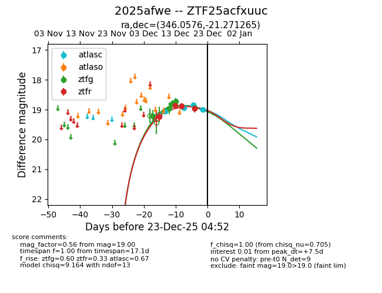
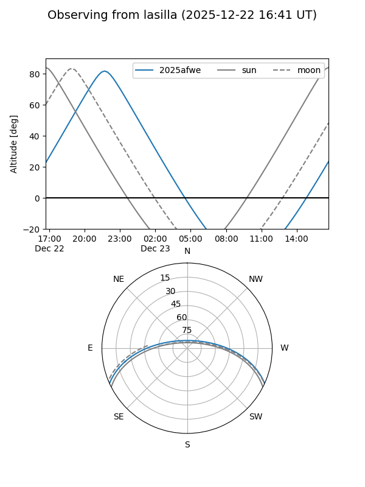
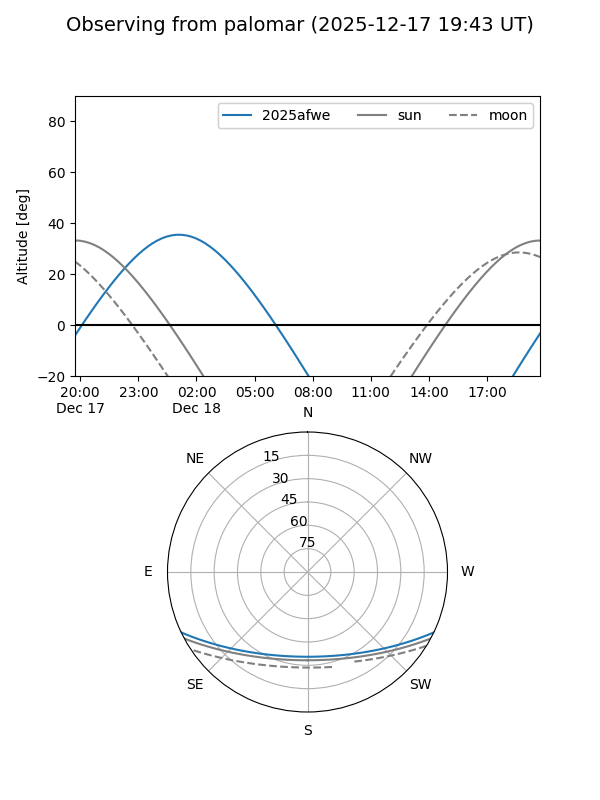
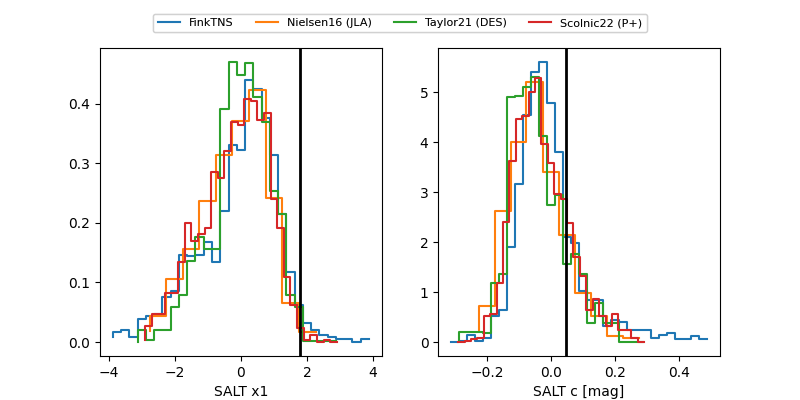

2025afwe
Target 2025afwe at 2025-12-21 04:48
Aliases and brokers:
FINK: fink-portal.org/ZTF25acfxuuc
Lasair: lasair-ztf.lsst.ac.uk/objects/ZTF25acfxuuc
ALeRCE: alerce.online/object/ZTF25acfxuuc
TNS: wis-tns.org/object/2025afwe
YSE: ziggy.ucolick.org/yse/transient_detail/2025afwe
alt names
ZTF25acfxuuc (ztf,fink_ztf)
2025afwe (tns,yse)
Coordinates:
equatorial (ra, dec) = 346.0576,-21.27126
equatorial (HMS+DMS) = 23:04:13.81,-21:16:16.55
galactic (l, b) = (40.5764,-64.91537)
Flags:
Photometry:
last atlasc=18.83, ztfg=18.94, ztfr=18.95
3 atlasc, 6 ztfg, 4 ztfr detections
Lightcurve

Visibility


Additional plots
